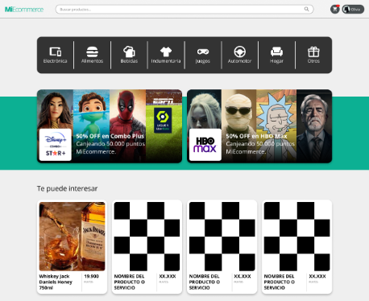

Proyecto desarrollado para la asignatura de Programación Web de la Universidad Nacional de Villa Mercedes (UNVIME).
Este es un ecommerce sencillo inspirado en Mercado Libre, desarrollado como trabajo práctico de la materia.
Estudiantes:

Diseños no propios, dados como recursos en la clase.
Antes de instalar el proyecto, asegurate de tener instalado en tu sistema:
Node.js versión 22.0 o superior. Podés verificar tu versión con:
node -v
Si no la tenés o tenés una versión anterior, descargala desde nodejs.org.
Python 3.x (necesario únicamente para compilar dependencias nativas).
Este proyecto usa better-sqlite3, un módulo que en algunos sistemas necesita compilarse localmente mediante node-gyp, y esa herramienta requiere Python instalado para funcionar. Si al correr npm install aparece un error relacionado con gyp o node-gyp, instalá Python desde python.org (marcando la opción "Add python.exe to PATH" durante la instalación) y volvé a intentar.
En Windows, además de Python puede ser necesario instalar las Build Tools de C++:
git clone https://github.com/Elses2/Ecommerce-Two
cd Ecommerce-Two
npm install
Si esta instalación falla por errores de compilación (por ejemplo, relacionados con
better-sqlite3onode-gyp), revisá la sección Requisitos previos.
Este proyecto necesita un archivo .env en la raíz con tus propias claves (no se sube al repositorio por seguridad). Creá el archivo copiando la plantilla:
cp .env.example .env
Y completá los valores dentro de .env:
PORT=3000
SESSION_SECRET=cambiar_por_un_secreto_largo_y_aleatorio
# URL de la imagen que se muestra cuando un producto no tiene image_url.
# Acepta http(s)://... o una ruta que empiece con "/". Si falta o es inválida, se usa el default.
FALLBACK_IMAGE_URL=https://placehold.co/600x600?text=Sin+imagen
Ya no hay claves externas que pedir:
SESSION_SECRETgenerala con un valor aleatorio largo (por ejemplo, la salida denode -e "console.log(require('crypto').randomBytes(32).toString('hex'))") y no la compartas públicamente.FALLBACK_IMAGE_URLpuede dejarse con el valor por defecto.
npm run dev
npm run seed
http://localhost:3000
La documentación interactiva de la API (Swagger UI) queda disponible en http://localhost:3000/api-docs.
npm run build
npm run test:checkout
Corre los tests del checkout (scripts/test-checkout.ts, casos T1–T7: stock,
rollback, idempotencia por token, precio congelado, carrera multi-proceso y
validación) contra una DB temporal — nunca toca dev.db. El exit code es
≠ 0 si algo falla.
spectsEccomerce/SPEC.md es la especificación viva: describe el proyecto tal como es hoy y es la única fuente de verdad que se edita. El resto de los .md en spectsEccomerce/ son históricos y no se actualizan. Las referencias (spec §X.Y) de los comentarios del código apuntan a SPEC.md.npm run build:docs regenera la documentación en docs/ (carpeta versionada en git): el HTML de TypeDoc (según scripts/typedoc.json) y el grafo de dependencias docs/graphs/dependencias.svg (madge). Requiere Graphviz instalado en el sistema. Si cambió la arquitectura, commitear el resultado.